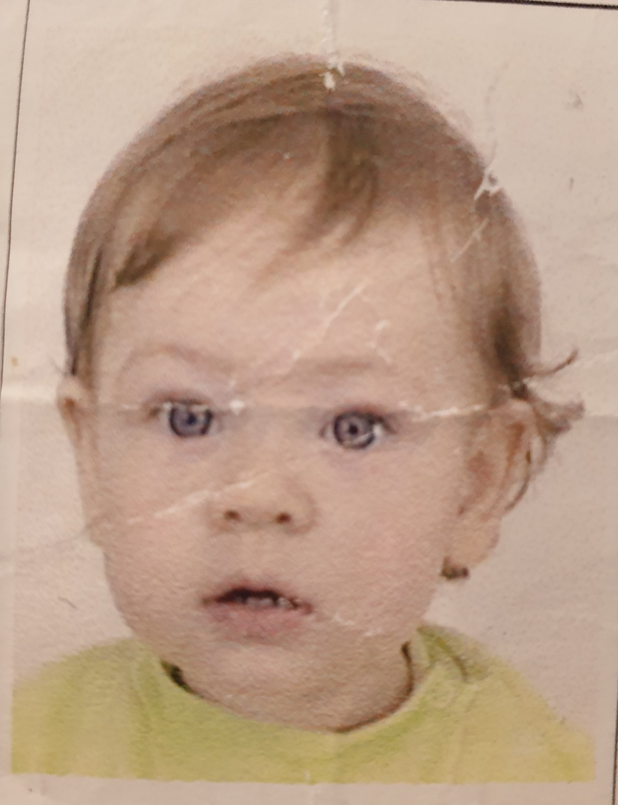
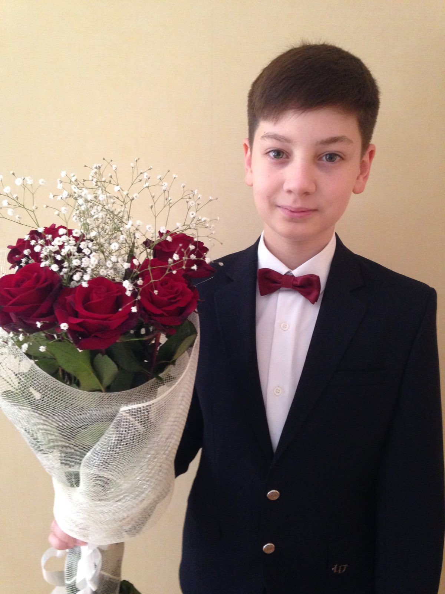

Extras din CV facut pentru limba si literatura romana in clasa a VIII-a:
,,Sunt o persoana prietenoasa si ajutatoare.
Am aptitudini comunicative,creative, insa mai puternic evidentiate aptitudini
sunt cele de influienta asupra altor oameni si de a calcula.Eu de asemenea am si
inteligente vizual-spatiale si corporalo-chinestesice, dar cele mai pronuntate sunt
logico-matematic si interpesonal.Sunt gata de noi incercari si oportunitati.''
Acum am 18 ani, sunt la rascrucea drumurilor unde tot depinde de mine.Trebuie sa aleg la ce facultate,
universitate si in ce tara sa ma duc.Se incepe viata matura si eu nu stiu ce vreau am
de gand sa fac tot ce pot ca sa fiu fericit. Dar lasam ingrijorarile (ele la bine nu aduc) si
haideti sa facem cunostinta. Eu iubesc viata, incerc sa savurez fiecare clipa si sa ma bucur de fiecare
maruntis si as spune ca reusesc asta sa fac. Acest tip de gandire foarte mult ma ajuta. Cred ca e foarte
important sa te inveti sa gandesti astfel pentru ca devii fericit pur si simplu ca traiesti si asta e super.
Sunt in ultimul an scolar, pe unii colegi nu stiu cand i-oi (ii+voi) mai vedea. M-am imprietenit cu totii si am inteles ca am colegi buni. Acasa totul e minunat, am de toate: jocuri, instrumente, mancare foarte gustoasa :), sunt satisfacut de viata mea, sunt multumit cu tot.
Aici eu ma adresez tot mie doar ca din viitor. Viata e minunata, eu sunt optimist dar stiu ca cateodata
mai am si stari de suparare,nervozitate sau ingrijorare si vreau sa iti spun ca nimic nu conteaza, totul
are valoare doar atunci cand tu o pui in lucruri, deci tu singur iti creezi realitatea: un lucru pur
si simplu exista, daca e bine sau rau decizi tu singur si viata e asa cum tu decizi sa o percepi. Nu are
sens sa cheltui timp pe suparare sau ganduri ce te epuizeaza, incearca sa te autoinduci intr-o stare placuta
sa te gadesti la ce iti place si sa rezolvi intrebarile pe rand si linistit, lucid (aici doamna Ghedea cred
s-ar bucura de reflectiile mele filozofice).
Iata cum am evoluat (si voi continua sa evoluez) in timpul vietii mele, asa aratam la (tine cursorul pe
imagine ca sa vezi varsta):

